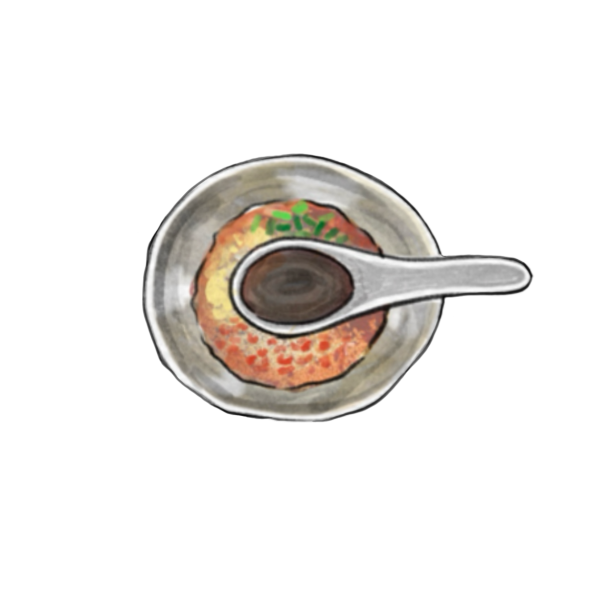
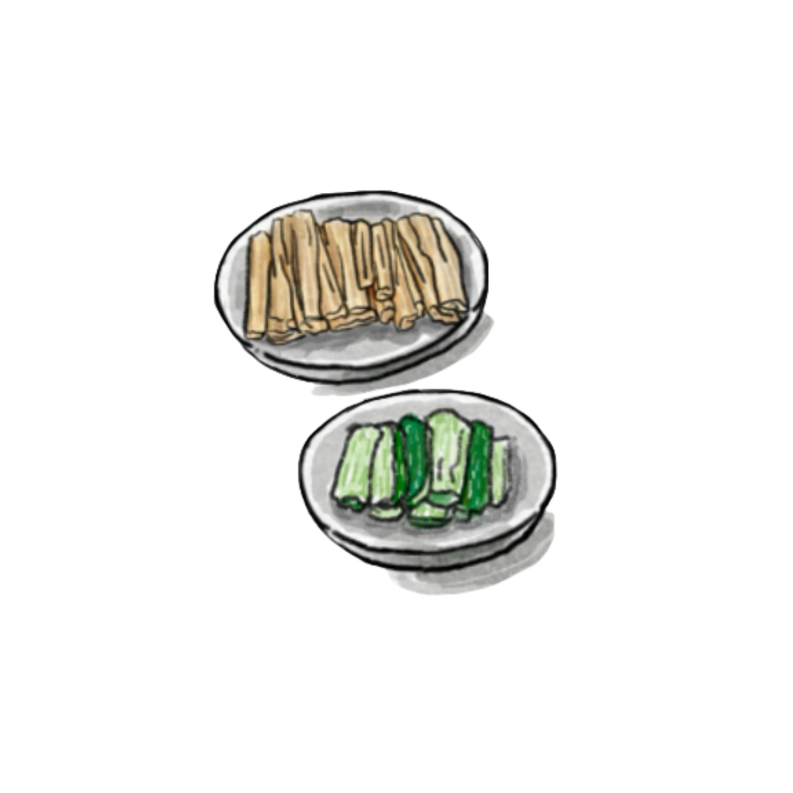
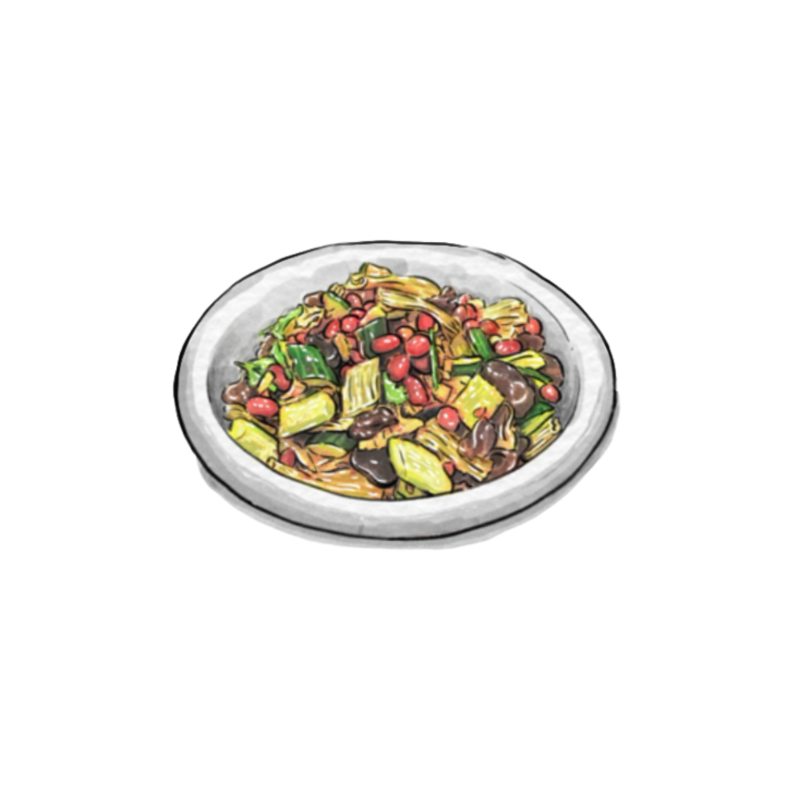

Let's get ready to cook

Step 1
In a bowl, add the minced garlic and chili flakes, then pour hot oil over them to release the aroma. Next, add two tablespoons of soy sauce, two tablespoons of vinegar, one tablespoon of oyster sauce, a pinch of sugar, a little salt, and some sesame oil. Mix well to make the sauce and set aside.

Step 2
Soak the tofu skin until softened, then blanch it and set aside. Lightly smash the cucumber with a knife and cut it into sections.

Step 3
Clean the wood ear mushrooms thoroughly. Bring a pot of water to a boil, then blanch the mushrooms briefly and set aside.

Step 4
Place the tofu skin, wood ear mushrooms, cucumber, and peanuts into a bowl. Pour in the prepared sauce and toss well. Add cilantro and serve.